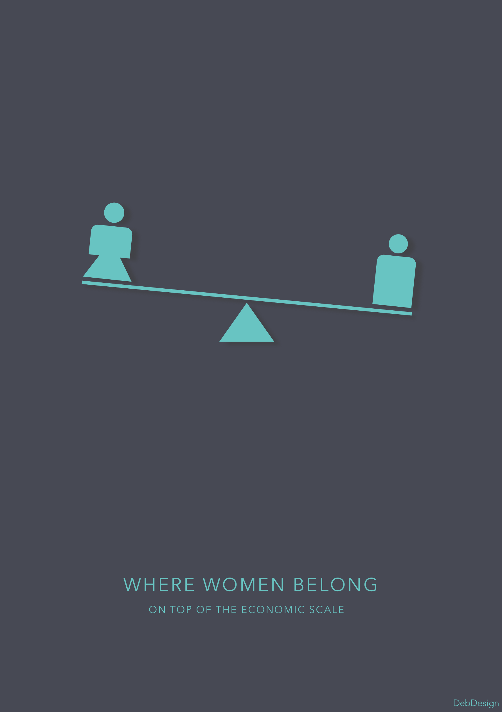
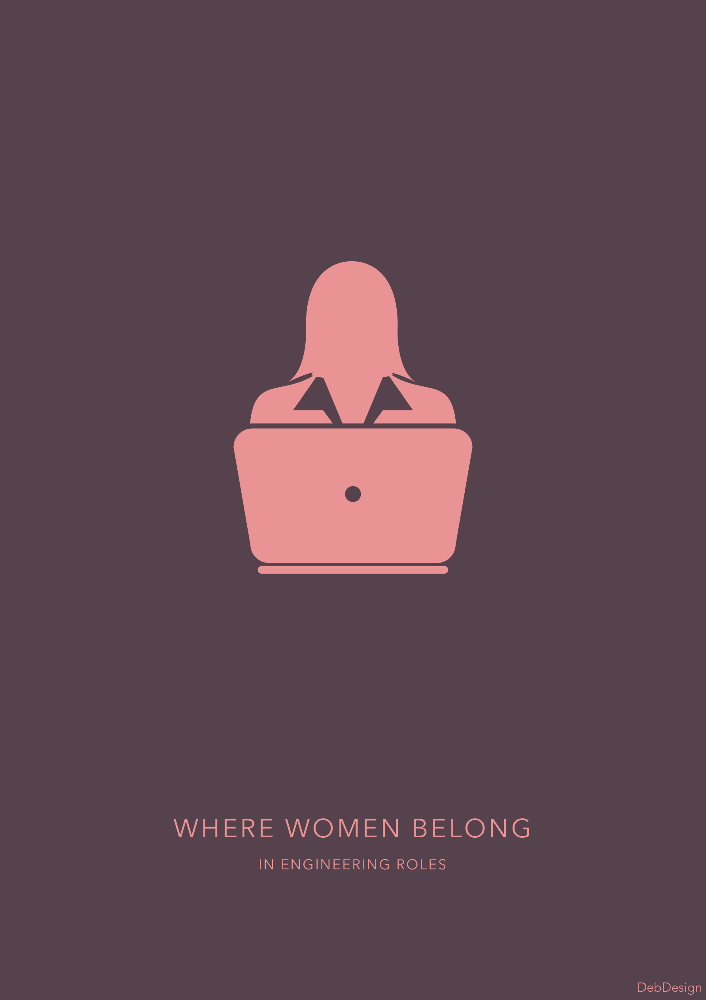

Introduction
Where women belong was a campaign that I created in the summer of 2017 as a movement to change the workplace conditions of women in tech companies.
Problem
Women have a constant habit of undervaluing themselves and questioning their own self worth. Women tend to externalize their successes and internalize their failures. One of the reasons of this is due to imposter syndrome that is prevalent among women of all ages. This syndrome was even named 'the workplace anxiety du jour' for women. Women tend to constantly think that 'They don't belong in a certain place' or that 'They don't deserve what they have' and as a result a lot of women miss out on opportunities to rise and succeed in the work place.
Goals
- Change the way women feel, are treated and are hired in the workplace.
- Create a way for girls at the level of high school to understand that this field has many other applications and exits.
- Create a connection database
Soltion
Imposter syndrome is real and very prevalent among women. This summer after interning at a company I realized that women tend to undervalue themselves to the point After spending a summer working at my internship, reading various articles on sexism in silicon valley and and understanding the role that gender plays in the power dynamics of the workplace I have concluded that despite all our efforts, it is going to be a while till women are considered completely equal in all aspects. To contribute to those steps we are taking steps to ensure equality, I created a kickstarter campaign for strong posters that will empower women in different 'Where women belong' campaign. Often times when I was feeling fed up with work in the office, down, demotivated or doubting myself as to if I truly do belong in the place To take a break, I would go to the restroom or outside to take a walk. There are times and something's in the workplace where you cannot you cannot confide in any one about the problems you are facing and if you are in the middle of something important such as an important meeting or something that will determine your future prospects, you just need to feel more empowered or encouraged. These posters will remind you of where you belong and that you are strong and are meant to be where you are
Future
Please print these out, hang them in your desk, on the walls of your work place or classroom to remind yourselves that no one but yourself is holding you back from your full potential and that you belong in positions of power even if the whole world doesn't think you do. Believe in being a woman. JOIN US